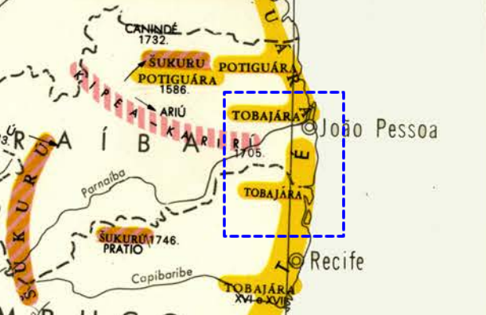
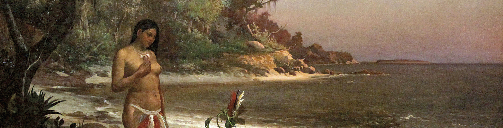
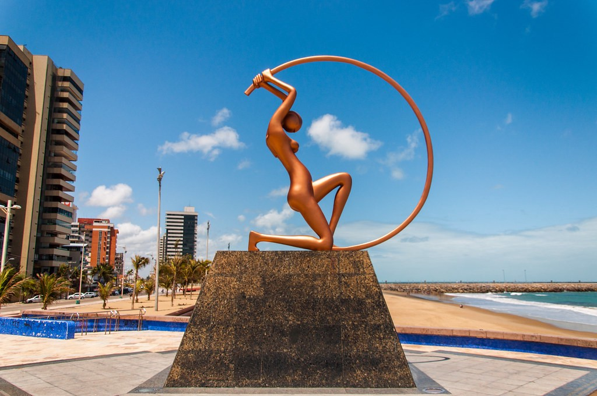
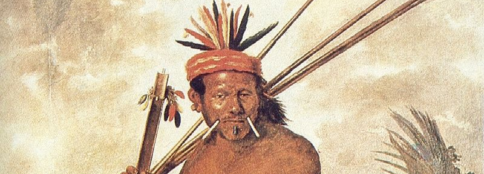

🦀 Caetés, Tabajaras e Potiguares
Um caeté foi capturado pelo inimigo potiguar enquanto seu grupo assaltava a aldeia do porto da Paraíba.
Parte do bando que conseguiu escapar retornou sem sucesso para sua aldeia, próxima ao Paraná Mirim.
Aquele irmão caeté que lá ficou, seria explorado de acordo com as vontades da aldeia potiguar para
depois, muito provavelmente, ser morto. Mais um dia na vida do Brasil do século 15.
Dança Social

O lugar do agito tupi
Definitivamente, a região entre a Ilha de Itamaracá (PE) e a Baía da Traição (PB) era o lugar para se
estar se você fosse um guerreiro buscando conquistas para sua nação. A região compreendia os limites
entre os territórios caetés, potiguares e tabajaras. Duas grandes nações, caeté e portiguar, em colisão
com os tabajaras no meio. Não havia sossego. Era uma região muito povoada e em pé de guerra.
A medida que vou lendo mais relatos da época, vou descobrindo ainda outras comunidades. Para citar
algumas:
- Na Baía da Traição havia uma aldeia, onde nasceram familiares do famoso heroi pernambucano
Felipe
Camarão;
- Em torno da atual cidade de Igarassu havia inúmeras ocupações caetés, que entraram em
conflito com
portugueses na presença do soldado alemão Hans Staden, quem relatou os conflitos;
- Alguns outros descrevem que o Alto da Sé em Olinda seria o pátio da maior aldeia do litoral
pernambucano;
- Uma aldeia no Parnamirim foi contemporânea ao tempo dos holandeses em Pernambuco, de acordo
com um
dos mapas da época.
Política Nativa
Essas comunidades mantinham entre si uma relação estranha aos olhos europeus cristãos. Era uma relação
onde a guerra e a captura de indivíduos de comunidades rivais, mesmo sendo da mesma nação, era natural.
Assim, as comunidades do litoral paraibano e pernambucano executavam uma dança social entre suas
aldeias.
Para discutir a política entre os povos de 1500, precisamos ter em mente que as descrições destes foram
iniciadas e predominantemente realizadas por homens brancos. É esperado, então, que confusões nas
nomenclaturas e definições de territórios existam: sempre se manifestará a necessidade de enquadrar um
povo cuja voz não é ouvida dentro dos moldes daqueles que contam a história.
Um destaque no meio dessa falta de consenso é o povo tabajara.

Os Tabajaras
Desde os primeiros contatos europeus, discute-se a definição dos territórios caetés e potiguares. Seus
limites e suas extensões foram bem descritas. Mas não há um consenso entre os acadêmicos sobre o
território tabajara. Não por acaso, o geógrafo Curt Nimuendajú registrou
comunidades dessa nação
próximos aos atuais grandes centros urbanos do litoral central: João Pessoa, Goiania, Igarassu, Olinda e
Recife.
Segundo o professor Ricardo Pinto de Medeiros*, os tabajaras pouco eram mencionados nas crônicas
anteriores ao século 18, contudo, a história europeia de contato com os nativos em Pernambuco é
registrada desde o século 16. Há uma possível explicação para a tardia caracterização dos tabajaras… e
ela vem da Europa.
Uma nação iluminada
No século 18, as ideias iluministas nascentes, que dariam contexto às diversas formas de liberdade
política e econômica na Europa, também influenciavam as formas de observar o Brasil nativo.
Frei Antônio
de Santa Maria Jaboatão
, um religioso que viveu no Recife no século 18, reverbera nas suas obras, em
certo grau, essa tendência do ocidente (que eclodiria na revolução industrial e na francesa no fim do
século). Nessa época, o porto do Recife era constantemente visitado por nações europeias que
apresentavam à cidade esses ideais que ferviam aquele outro continente. Em descrição dessa época, o frei
alça os tabajara à condição de etnia mais importante na conquista do território pelos portugueses. A
romantização desses povos os torna grandes herois dentro da mitologia portuguesa da época, quando se
buscava resgatar as histórias únicas da natureza e do passado dos povos, característica embriã do
romantismo europeu.
Foi assim que o frei transcreveu (e adaptou) o
mito da origem dos povos tupis na costa do Brasil e sua
ancestralidade tabajara
(ver “História dos Tabajaras”).

Estátua de Iracema em Fortaleza, fotografia de Evaldo HS Nascimento. Iracema é uma
personagem tabajara, mas das comunidades do oeste cearense. A obra literária “Iracema” do escritor
também cearense José de Alencar, tornou-se um ícone daquele estado e é uma das mais famosas
manifestações do romantismo literário brasileiro. A obra foi escrita 100 anos depois das descrições já
românticas dos tabajaras pelo frei Santa Maria Jaboatão.
Menção Necessária
Para completar o quadro de nações em torno do Recife, juntam-se os tapuias. “Tapuia” quer dizer
“de fora”
em tupi. Essa palavra não designa uma nação específica, mas todas aquelas do interior que não falam
tupi. Diz-se que os tapuias eram vistos como inimigos por aqueles que habitavam o litoral.

Recorte de “Homem Tarairiú”, pintura do holandês Albert Eckhout. Os tarairiús eram povos
tapuias.
No Recife, os tapuias também serão personagens presentes que se diluirão entre os povos. A imagem que
abre esse texto retrata uma cena tapuia, ou seja, de pessoas não falantes do tupi.
Recomendações & Referências
Entender a política, a distribuição desses povos e saber um pouco quem é quem, nos facilitará compreender
como aconteceu a invasão europeia e os vieses por trás dessas descrições. Portanto, deixo duas sugestões
de conteúdo para mais infos:
Citado nesse texto